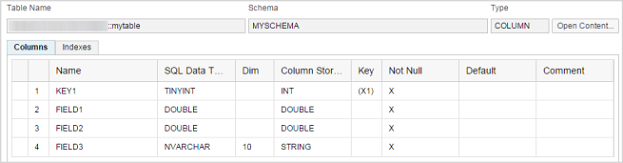

Tutorial: Create a Table
In this tutorial, you use the SAP HANA Web-based Development Workbench Editor to create a table as a design-time file in the repository using the hdbtable syntax. In the catalog, you view the table definition and insert data into the table.
Prerequisites
You have the privileges granted by the sap.hana.ide.roles::EditorDeveloper and sap.hana.ide.roles::CatalogDeveloper roles; these roles are included in the parent role sap.hana.ide.roles::Developer.
Procedure
-
Create a schema.
-
Select the newly created demo.tables package and from the context
menu choose
 New
New  File
File  .
.
- Enter the name of the schema in the File Name field, for example, myschema.hdbschema, and choose Create.
-
Add the schema definition by choosing
 (Insert
snippet) in the toolbar and change the schema name to
MYSCHEMA, for example, schema_name =
“MYSCHEMA”;.
(Insert
snippet) in the toolbar and change the schema name to
MYSCHEMA, for example, schema_name =
“MYSCHEMA”;.
-
Save the file and choose
 (Assign
execution authorization) in the toolbar.
(Assign
execution authorization) in the toolbar.
-
Select the newly created demo.tables package and from the context
menu choose
-
Create the new table definition.
-
Select the demo.tables package and from the
context menu choose New File .
-
Choose
(Insert snippet) in the toolbar to insert the
following table definition code. Remember to change the schema name in
the inserted code to MYSCHEMA.
table.schemaName = "MYSCHEMA"; table.tableType = COLUMNSTORE; table.columns = [ {name = "KEY1"; sqlType = TINYINT; nullable = false;}, {name = "FIELD1"; sqlType = DOUBLE; nullable = false;}, {name = "FIELD2"; sqlType = DOUBLE; nullable = false;}, {name = "FIELD3"; sqlType = NVARCHAR; length = 10; nullable = false;} ]; table.primaryKey.pkcolumns = ["KEY1"];
-
Select the demo.tables package and from the
context menu choose
-
In the catalog, check the table definition.
-
To open the catalog, choose
 (Navigation Links) Catalog .
(Navigation Links) Catalog .
-
Select the mytable file under the MYSCHEMA Tables node.
The table definition is displayed, as shown in the example below:

-
To open the catalog, choose
-
Add entries to the table.
-
Choose
 (Insert).
(Insert).
-
Choose